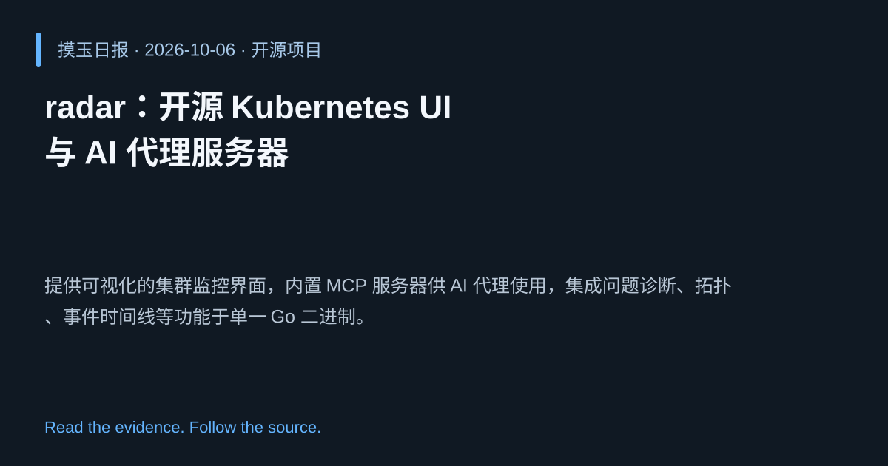

2026-10-06 · Asia/Shanghai · 开源项目 · #8
radar：开源 Kubernetes UI 与 AI 代理服务器
skyhook-io/radar
提供可视化的集群监控界面，内置 MCP 服务器供 AI 代理使用，集成问题诊断、拓扑、事件时间线等功能于单一 Go 二进制。
为什么值得关注
让 AI 代理能够直接读取和操作集群状态，提升运维自动化与故障响应效率。
- 内置 MCP 服务器，供 AI 代理实时查询集群信息。
- 统一展示 Issues、拓扑、事件时间线、Helm、GitOps 等。
- 单个 Go 二进制，易于部署在任何 Kubernetes 环境。

热度 42.4 / 100；排名与评分保留该期记录。